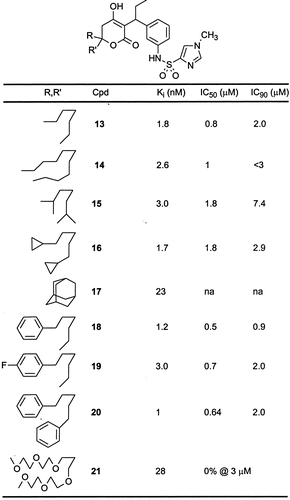
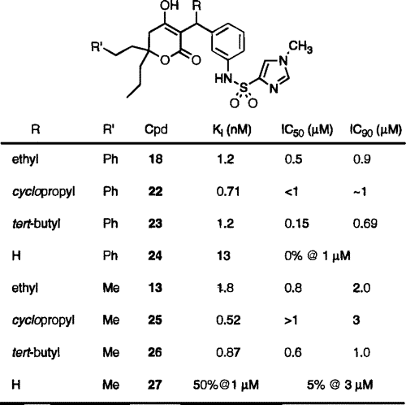
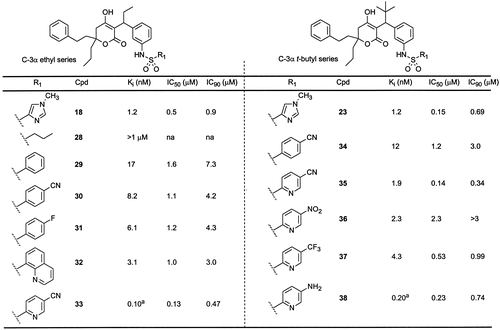
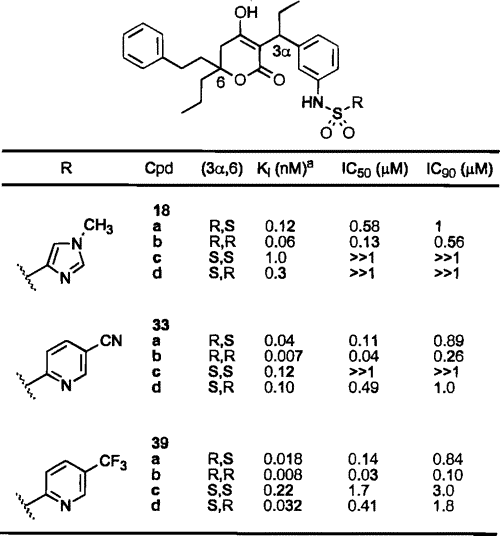
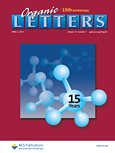
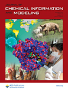
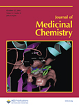
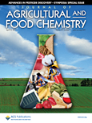
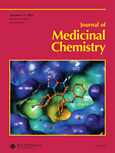

Cart
Cart
Article
Tipranavir (PNU-140690): A Potent, Orally Bioavailable Nonpeptidic HIV Protease Inhibitor of the 5,6-Dihydro-4-hydroxy-2-pyrone Sulfonamide Class
Abstract
A broad screening program previously identified phenprocoumon (1) as a small molecule template for inhibition of HIV protease. Subsequent modification of this lead through iterative cycles of structure-based design led to the activity enhancements of pyrone and dihydropyrone ring systems (II and V) and amide-based substitution (III). Incorporation of sulfonamide substitution within the dihydropyrone template provided a series of highly potent HIV protease inhibitors, with structure−activity relationships described in this paper. Crystallographic studies provided further information on important binding interactions responsible for high enzymatic binding. These studies culminated in compound VI, which inhibits HIV protease with a Ki value of 8 pM and shows an IC90 value of 100 nM in antiviral cell culture. Clinical trials of this compound (PNU-140690, Tipranavir) for treatment of HIV infection are currently underway.
Figure 1 t
Chemistry
Scheme 1 a
a (a) CH3COCH2CO2CH3, NaH, THF; (b) NaOH then H3O+; (c) m-NO2C6H4CHO, AlCl3, THF; (d) Et3Al, CuBr−Me2S, THF; (e) H2, Pd/C, MeOH; (f) RSO2Cl, pyr, CH2Cl2.
Scheme 2 a
a (a) m-CbzNHC6H4CHO, AlCl3, THF; (b) t-BuMgCl or “t-BuCu(CN)ZnI”, CuBr−Me2S, THF; (c) H2, Pd/C, MeOH; (d) RSO2Cl, pyr, CH2Cl2.
Results and Discussion
Table 1. C-6 Variation 
Table 2. C-3α Variation 
Table 3. Sulfonamide Variation
|  |
a Ki in tandem HIV assay.
Table 4. Stereochemical Variation 
a Tandem HIV assay.
Figure 2 PNU-140690: Active site hydrogen-bonding interactions.
Figure 3 PNU-140690: Protease active site surface view.
Conclusion
Experimental Section
Acknowledgment
We thank Tom M. Judge for synthesis of compound 39a and Jeanette K. Morris for synthesis of compounds 39c and 39d.
This article references 34 other publications.
- (1) Blundell, T. L.; Lapatto, R.; Wilderspin, A. F.; Hemmings, A. M.; Hobart, P. M.; Danley, D. E.; Whittle, P. J. The 3-D Structure of HIV-1 Protease and the Design of Antiviral Agents for the Treatment of AIDS. Trends Biol. Sci. 1990, 15, 425−430.
- (3) Huff, J. R. HIV Protease: A Novel Chemotherapeutic Target for AIDS. J. Med. Chem. 1991, 34, 2305−2314.
- (7) Plattner, J. J.; Norbeck, D. W. Obstacles to Drug Development from Peptide Leads. In Drug Discovery Technologies; Clark, C. R., Moos, W. H., Eds.; Ellis Horwood Ltd.: Chichester, 1990; Chapter 5, pp 92−126.
- (9) Kempf, D. J.; Codacovi, L.; Wang, X. C.; Kohlbrenner, W. E.; Wideburg, N. E., Saldivar, A.; Vasavanonda, S.; Marsh, K. C.; Bryant, P.; Sham, H. L.; Green, B. E.; Betebenner, D. A.; Erickson, J.; Norbeck, D. W. Symmetry-based Inhibitors of HIV Protease. Structure−Activity Studies of Acylated 2,4-Diamino-1,5-diphenyl-3-hydroxypentane and 2,5-Diamino-1,6-diphenylhexane-3,4-diol. J. Med. Chem. 1993, 36, 320−330.
- Kempf, D. J.; Marsh, K. C.; Fino, L. C.; Bryant, P.; Craig-Kennard, A.; Sham, H. L.; Zhao, C.; Vasavanonda, S.; Kohlbrenner, W. E.; Wideburg, N. E.; Saldivar, A.; Green, B. E.; Herrin, T.; Norbeck, D. W. Design of Orally Bioavailable, Symmetry-based Inhibitors of HIV Protease. Bioorg. Med. Chem. 1994, 2, 847−858.
- (11) Kempf, D. J.; Marsh, K. C.; Denissen, J. F.; McDonald, E.; Vasavanonda, S.; Flentge, C. A.; Green, B. E.; Fino, L.; Park, C. H.; Kong, X.-P.; Wideburg, N. E.; Saldivar, A.; Ruiz, L.; Kati, W. M.; Sham, H. L.; Robins, T.; Stewart, K. D.; Hsu, A.; Plattner, J. J.; Leonard, J. M.; Norbeck, D. W. ABT-538 is a Potent Inhibitor of Human Immunodeficiency Virus Protease and has High Oral Bioavailability in Humans. Proc. Natl. Acad. Sci. U.S.A. 1995, 92, 2484−2488.
- (12) Vacca, J. P.; Dorsey, B. D.; Schleif, W. A.; Levin, R. B.; McDaniel, S. L.; Darke, P. L.; Zugay, J.; Quintero, J. C.; Blahy, O. M.; Roth, E.; Sardana, V. V.; Schlabach, A. J.; Graham, P. I.; Condra, J. H.; Gotlib, L.; Holloway, M. K.; Lin, J.; Chen, I.-W.; Vastag, K.; Ostovic, D.; Anderson, P. S.; Emini, E. A.; Huff, J. R. L-735,524: An Orally Bioavailable Human Immunodeficiency Virus Type 1 Protease Inhibitor. Proc. Natl. Acad. Sci. U.S.A. 1994, 91, 4096−4100.
- (13) Lam, P. Y.-S.; Jadhav, P. K.; Eyermann, C. J.; Hodge, C. N.; Ru, Y.; Bacheler, L. T.; Meek. J. L.; Otto, M. J.; Rayner, M. M.; Wong, Y. N.; Chang, C.-H.; Weber, P. C.; Jackson, D. A.; Sharpe, T. R.; Erickson-Vitanen, S. Rational Design of Potent, Bioavailable, Non-peptide Cyclic Urea as HIV Protease Inhibitors. Science 1994, 263, 380−384.
- (14) Wong, Y. N.; Burcham, D. L.; Saxton, P. L.; Erickson-Vitanen, S.; Grubb, M. F.; Quon, C. Y.; Huang, S.-M. A Pharmacokinetic Evaluation of HIV Protease Inhibitors, Cyclic Ureas, in Rats and Dogs. Biopharm. Drug Disp. 1994, 15, 535−544.
- (15) Getman, D. P.; DeCrescenzo, G. A.; Heintz, R. M.; Reed, K. L.; Talley, J. J.; Bryant, M. L.; Clare, M.; Houseman, K. A.; Marr, J. J.; Mueller, R. A.; Vazquez, M. L.; Shieh, H.-S.; Stallings, W. C.; Stegeman, R. A. Discovery of a Novel Class of Potent HIV-1 Protease Inhibitors Containing the (R)-(Hydroxyethyl)urea Isostere. J. Med. Chem. 1993, 36, 288−291.
- (16) Bryant, M. HIV Protease Inhibitors: Action to Efficacy. Inhibitor SC-55389a presented at Session 46 (I) at the 34th ICAAC, Orlando, FL, 1994.
- (17) Kim, E. E.; Baker, C. T.; Dwyer, M. D.; Murcko, M. A.; Rao, B. G.; Tung, R. D.; Navia, M. A. Crystal Structure of HIV-1 Protease in Complex with VX-478, a Potent and Orally Bioavailable Inhibitor of the Enzyme. J. Am. Chem. Soc. 1995, 117, 1181−1182.
- (18) Kaldor, S. W.; Kalish, V. J.; Davies, J. F., II; Shetty, B. V.; Fritz, J. E.; Appelt, K.; Burgess, J. A.; Campanale, K. M.; Chirgadze, N. Y.; Clawson, D. K.; Dressman, B. A.; Hatch, S. D.; Khalil, D. A.; Kosa, M. B.; Lubbehusen, P. P.; Muesing, M. A.; Patick, A. K.; Reich, S. H.; Su, K. S.; Tatlock, J. H. Viracept (Nelfinavir Mesylate, AG1343): A Potent, Orally Bioavailable Inhibitor of HIV-1 Protease. J. Med. Chem. 1997, 40, 3979−3985.
- (19) Mimoto, T.; Imai, J.; Kisanuki, S.; Enomoto, H.; Hattori, N.; Akaju, K.; Kiso, Y. Kynostatin KNI-227 and -272, Highly Potent Anti-HIV Agents: Conformationally Constrained Tripeptide Inhibitors of HIV Protease Containing Allophenylnorstatine. Chem. Pharm. Bull. 1992, 40, 2251−2253.
- Thaisrivongs, S.; Tomich, P. K.; Watenpaugh, K. D.; Chong, K.-T.; Howe, W. J.; Yang, C.-P.; Strohbach, J. W.; Turner, S. R.; McGrath, J. P.; Bohanon, M. J.; Lynn, J. C.; Mulichak, A. M.; Spinelli, P. A.; Hinshaw, R. R.; Pagano, P. J.; Moon, J. B.; Ruwart, M. J.; Wilkinson, K. F.; Rush, B. D.; Zipp, G. L.; Dalga, R. J.; Schwende, F. J.; Howard, G. M.; Padbury, G. E.; Toth, L. N.; Zhao, Z.; Koeplinger, K. A.; Kakuk, T. J.; Cole, S. L.; Zaya, R. M.; Piper, R. C.; Jeffrey, P. Structure-Based Design of HIV Protease Inhibitors: 4-Hydroxycoumarins and 4-Hydroxy-2-pyrones as Nonpeptidic Inhibitors. J. Med. Chem. 1994, 37, 3200−3204.
- (21) Skulnick, H. I.; Johnson, P. D.; Howe, W. J.; Tomich, P. K.; Chong, K.-T.; Watenpaugh, K. D.; Janakiraman, M. N.; Dolak, L. A.; McGrath, J. P.; Lynn, J. C.; Horng, M.-M.; Hinshaw, R. R.; Zipp, G. L.; Ruwart, M. J.; Schwende, F. J.; Zhong, W.-Z.; Padbury, G. E.; Dalga, R. J.; Shiou, L.; Possert, P. I.; Rush, B. D.; Wilkinson, K. F.; Howard, G. M.; Toth, L. N.; Williams, M. G.; Kakuk, T. J.; Cole, S. L.; Zaya, R. M.; Thaisrivongs, S.; Aristoff, P. A. Structure-Based Design of Sulfonamide Substituted Nonpeptidic HIV Protease Inhibitors. J. Med. Chem. 1995, 38, 4968−4971.
- (22) Thaisrivongs, S.; Watenpaugh, K. D.; Howe, W. J.; Tomich, P. K.; Dolak, L. A.; Chong, K.-T.; Tomich, C.-S. C.; Tomasselli, A. G.; Turner, S. R.; Strohbach, J. W.; Mulichak, A. M.; Janakiraman, M. N.; Moon, J. B.; Lynn, J. C.; Horng, M.-M.; Hinshaw, R. R.; Curry, K. A.; Rothrock, D. J. Structure-Based Design of Novel HIV Protease Inhibitors: Carboxamide-Containing 4-Hydroxycoumarins and 4-Hydroxy-2-pyrones as Potent Nonpeptidic Inhibitors. J. Med. Chem. 1995, 38, 3624−3637.
- (23) Thaisrivongs, S.; Romero, D. L.; Tommasi, R. A.; Janakiraman, M. N.; Strohbach, J. W.; Turner, S. R.; Biles, C.; Morge, R. R.; Johnson, P. D.; Aristoff, P. A.; Tomich, P. K.; Lynn, J. C.; Horng, M.-M.; Chong, K.-T.; Hinshaw, R. R.; Howe, W. J.; Finzel, B. C.; Watenpaugh, K. D. Structure-Based Design of HIV Protease Inhibitors: 5,6-Dihydro-4-hydroxy-2-pyrones as Effective, Nonpeptidic Inhibitors. J. Med. Chem. 1996, 39, 4630−4642.
- (24) Thaisrivongs, S.; Skulnick, H. I.; Turner, S. R.; Strohbach, J. W.; Tommasi, R. A.; Johnson, P. D.; Aristoff, P. A.; Judge, T. M.; Gammill, R. B.; Morris, J. K.; Romines, K. R.; Chrusciel, R. A.; Hinshaw, R. R.; Chong, K.-T.; Tarpley, W. G.; Poppe, S. M.; Slade, D. E.; Lynn, J. C.; Horng, M.-M.; Tomich, P. K.; Seest, E. P.; Dolak, L. A.; Howe, W. J.; Howard, G. M.; Schwende, F. J.; Toth, L. N.; Padbury, G. E.; Wilson, G. J.; Shiou, L.; Zipp, G. L.; Wilkinson, K. F.; Rush, B. D.; Ruwart, M. J.; Koeplinger, K. A.; Zhao, Z.; Cole, S.; Zaya, R. M.; Kakuk, T. J.; Janakiraman, M. N.; Watenpaugh, K. D. Structure-Based Design of HIV Protease Inhibitors: Sulfonamide-Containing 5,6-Dihydro-4-hydroxy-2-pyrones as Nonpeptidic Inhibitors. J. Med. Chem. 1996, 39, 4349−4353.
- (25) Jubert, C.; Knochel, P. Preparation of Polyfunctional Nitro Olefins and Nitroalkanes Using the Copper−Zinc Reagents RCu(CN)ZnI. J. Org. Chem. 1992, 57, 5431−5438.
- (26) Judge, T. M.; Phillips, G.; Morris, J. K.; Lovasz, K. D.; Romines, K. R.; Luke, G. P.; Tulinsky, J.; Tustin, J. M.; Chrusciel, R. A.; Dolak, L. A.; Mizsak, S. A.; Watt, W.; Morris, J.; Vander Velde, S. L.; Strohbach, J. W.; Gammill, R. B. Asymmetric Syntheses and Absolute Stereochemistry of 5,6-Dihydro-α-pyrones, A New Class of Potent HIV Protease Inhibitors. J. Am. Chem. Soc. 1997, 119, 3627−3628. Stereoselective pilot scale syntheses have also been developed (J. Org. Chem., in press).
- (27) Thaisrivongs, S.; Janakiraman, M. N.; Chong, K.-T.; Tomich, P. K.; Dolak, L. A.; Turner, S. R.; Strohbach, J. W.; Lynn, J. C.; Horng, M.-M.; Hinshaw, R. R.; Watenpaugh, K. D. Structure-Based Design of Novel HIV Protease Inhibitors: Sulfonamide-Containing 4-Hydroxycoumarins and 4-Hydroxy-2-pyrones as Potent Non-Peptidic Inhibitors. J. Med. Chem. 1996, 39, 2400−2410.
- (28) Cheng, Y.-S. E.; Yin, F. H.; Foundling, S.; Blomstrom, D.; Kettner, C. A. Stability and Activity of Human Immunodeficiency Virus Protease: Comparison of the Natural Dimer with a Homologous, Single-Chain Tethered Dimer. Proc. Natl. Acad. Sci. U.S.A. 1990, 88, 9660−9664.
- (29) Mildner, A. M.; Rothrock, D. J.; Leone, J. W.; Bannow, C. A.; Lull, J. M.; Reardon, I. M.; Sarcich, J. L.; Howe, W. J.; Tomich, C. C.; Smith, C. W.; Heinrikson, R. L.; Tomasselli, A. G. The HIV-1 Protease as Enzyme and Substrate: Mutagenesis of Autolysis Sites and Generation of a Stable Mutant with Retained Kinetic Properties. Biochemistry 1994, 33, 9405−9413.
- (31) Markowitz, M.; Mo, H.; Kempf, D. J.; Norbeck, D. W.; Bhat, T. N.; Erickson, J. W.; Ho, D. D. Selection and Analysis of Human Immunodeficiency Virus Type 1 Variants with Increased Resistance to ABT-538, a Novel Protease Inhibitor. J. Virology 1995, 69, 701−706.
- (32) Poppe, S. M.; Slade, D. E.; Chong, K.-T.; Hinshaw, R. R.; Pagano, P. J.; Markowitz, M.; Ho, D. D.; Mo, H.; Gorman, R. R., III; Dueweke, T. J.; Thaisrivongs, S.; Tarpley, W. G. Antiviral Activity of the Dihydropyrone PNU-140690, a New Nonpeptidic Human Immunodeficienty Virus Protease Inhibitor. Antimicrob. Agents Chemother. 1997, 41, 1058−1063.
- (33) Wathen, W. M. In vitro evaluation of U-140135 and U-140690 protease inhibitors against a panel of HIV-1 clinical isolates (contracted study with SRA Technologies), unpublished results; experiments performed according to the procedure of Japour, A. J.; Mayers, D. L.; Johnson, V. A.; Kuritzkes, D. R.; Beckett, L. A.; Arduino, J.-M.; Lane, J.; Black, R. J.; Reichelderfer, P. S.; D'Aquila, R. T.; Crumpacker, C. S. Standardized Peripheral Blood Mononuclear Cell Culture Assay for Determination of Drug Susceptibilities of Clinical Human Immunodeficiency Virus Type 1 Isolates. Antimicrob. Agents Chemother. 1993, 37, 1095−1101.
- (34) Borin, M. T.; Carlson, G. F.; Wang, Y.; Brewer, J. E.; Daenzer, C. L.; Baldwin, J. R.; Li, H. Single-dose safety, tolerance, and pharmacokinetics of PNU-140690, a new HIV protease inhibitor, in healthy volunteers. 37th ICACC, Toronto, Ontario, Sept 28−Oct 1, 1997.

Citing Articles
Citation data is made available by participants in CrossRef's Cited-by Linking service. For a more comprehensive list of citations to this article, users are encouraged to perform a search in SciFinder.
This article has been cited by 33 ACS Journal articles (5 most recent appear below).
- 
Efficient Approach to 4-Sulfonamidoquinolines via Copper(I)-Catalyzed Cascade Reaction of Sulfonyl Azides with Alkynyl Imines
Guolin Cheng and Xiuling CuiOrganic Letters2013 15 (7), 1480-1483Efficient Approach to 4-Sulfonamidoquinolines via Copper(I)-Catalyzed Cascade Reaction of Sulfonyl Azides with Alkynyl Imines
Guolin Cheng and Xiuling CuiOrganic Letters2013 15 (7), 1480-1483A novel and efficient approach to 4-sulfonamidoquinolines via copper-catalyzed cascade reaction of sulfonyl azides with alkynyl imines has been developed in which a 1,3-dipole cycloaddition/ketenimine formation/6π-electrocyclization/[1,3]-H shift cascade ...
- 
Molecular Dynamics Investigation on a Series of HIV Protease Inhibitors: Assessing the Performance of MM-PBSA and MM-GBSA Approaches
Hemant Kumar Srivastava and G. Narahari SastryJournal of Chemical Information and Modeling2012 52 (11), 3088-3098Molecular Dynamics Investigation on a Series of HIV Protease Inhibitors: Assessing the Performance of MM-PBSA and MM-GBSA Approaches
Hemant Kumar Srivastava and G. Narahari SastryJournal of Chemical Information and Modeling2012 52 (11), 3088-3098The binding free energies (ΔGBind) obtained from molecular mechanics with Poisson–Boltzmann surface area (MM-PBSA) or molecular mechanics with Generalized Born surface area (MM-GBSA) calculations using molecular dynamics (MD) trajectories are the most ...
- 
P1-Substituted Symmetry-Based Human Immunodeficiency Virus Protease Inhibitors with Potent Antiviral Activity against Drug-Resistant Viruses
David A. DeGoey, David J. Grampovnik, Hui-Ju Chen, William J. Flosi, Larry L. Klein, Tatyana Dekhtyar, Vincent Stoll, Mulugeta Mamo, Akhteruzzaman Molla, and Dale J. KempfJournal of Medicinal Chemistry2011 54 (20), 7094-7104P1-Substituted Symmetry-Based Human Immunodeficiency Virus Protease Inhibitors with Potent Antiviral Activity against Drug-Resistant Viruses
David A. DeGoey, David J. Grampovnik, Hui-Ju Chen, William J. Flosi, Larry L. Klein, Tatyana Dekhtyar, Vincent Stoll, Mulugeta Mamo, Akhteruzzaman Molla, and Dale J. KempfJournal of Medicinal Chemistry2011 54 (20), 7094-7104Because there is currently no cure for HIV infection, patients must remain on long-term drug therapy, leading to concerns over potential drug side effects and the emergence of drug resistance. For this reason, new and safe antiretroviral agents with ...
- 
HIV-1 Integrase and Neuraminidase Inhibitors from Alpinia zerumbet
Atul Upadhyay, Jamnian Chompoo, Wataru Kishimoto, Tadahirio Makise, and Shinkichi TawataJournal of Agricultural and Food Chemistry2011 59 (7), 2857-2862HIV-1 Integrase and Neuraminidase Inhibitors from Alpinia zerumbet
Atul Upadhyay, Jamnian Chompoo, Wataru Kishimoto, Tadahirio Makise, and Shinkichi TawataJournal of Agricultural and Food Chemistry2011 59 (7), 2857-2862AIDS and influenza are viral pandemics and remain one of the leading causes of human deaths worldwide. The increasing resistance of these diseases to synthetic drugs demands the search for novel compounds from plant-based sources. In this regard, the ...
- 
Structure-Based Design, Synthesis, and Structure−Activity Relationship Studies of HIV-1 Protease Inhibitors Incorporating Phenyloxazolidinones
Akbar Ali, G. S. Kiran Kumar Reddy, Madhavi N. L. Nalam, Saima Ghafoor Anjum, Hong Cao, Celia A. Schiffer, and Tariq M. RanaJournal of Medicinal Chemistry2010 53 (21), 7699-7708Structure-Based Design, Synthesis, and Structure−Activity Relationship Studies of HIV-1 Protease Inhibitors Incorporating Phenyloxazolidinones
Akbar Ali, G. S. Kiran Kumar Reddy, Madhavi N. L. Nalam, Saima Ghafoor Anjum, Hong Cao, Celia A. Schiffer, and Tariq M. RanaJournal of Medicinal Chemistry2010 53 (21), 7699-7708A series of new HIV-1 protease inhibitors with the hydroxyethylamine core and different phenyloxazolidinone P2 ligands were designed and synthesized. Variation of phenyl substitutions at the P2 and P2′ moieties significantly affected the binding affinity ...
Tools
-
 Add to Favorites
Add to Favorites
- Download Citation
- Email a Colleague
-
 Permalink
Permalink
- Order Reprints
 Rights & Permissions
Rights & Permissions- Citation Alerts
History
- Published In Issue August 27, 1998
- Received April 8, 1998
 ACS
Network
ACS
Network